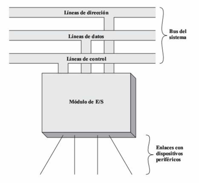
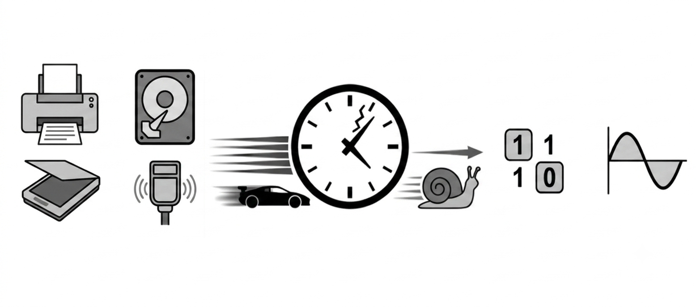
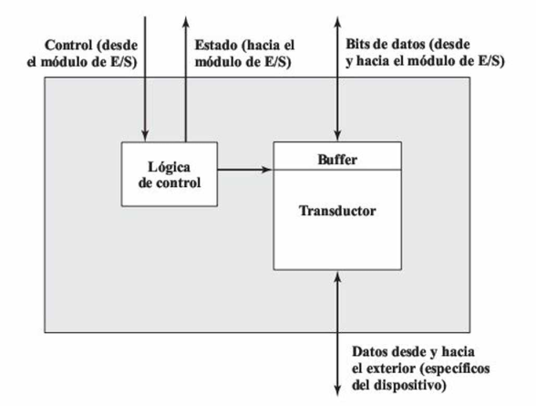
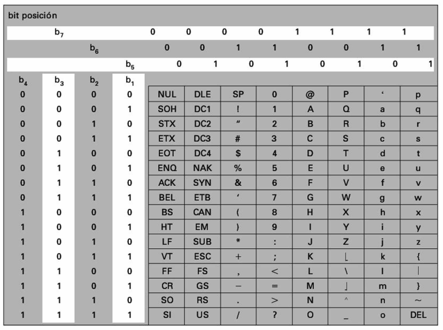
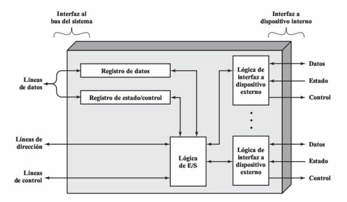
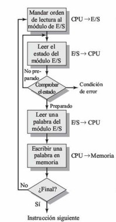
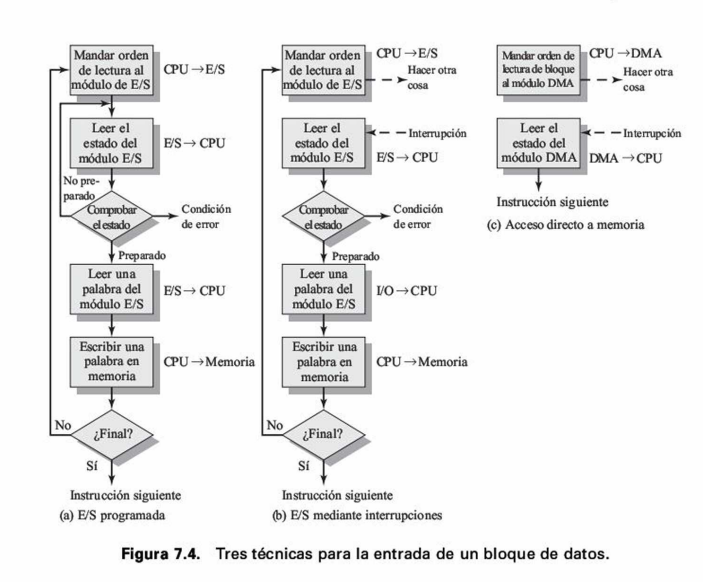
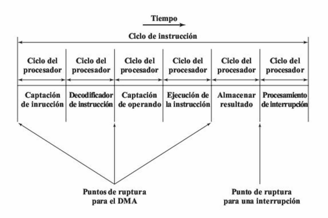
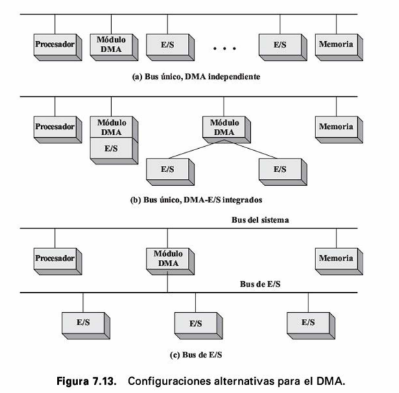
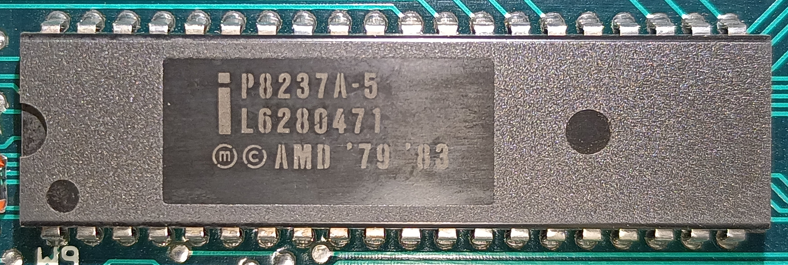

S11 — Sistemas de Entrada/Salida
Grupo 7 - Grupo 8
Sistemas de Entrada/Salida
La arquitectura de E/S de un computador es su interfaz con el exterior. Esta arquitectura permite una forma sistemática de controlar su interacción con el mundo exterior a la vez que proporciona al sistema operativo la información necesaria para para gestionar perifericos Para ello, existen 3 técnicas principales:
E/S ProgramadaE/S mediante interrupcionesAcceso directo a memoria (DMA)
Modulo de E/S
Elemento clave de un computador junto al procesador y la memoria. Permite y gestiona la comunicación entre los periféricos y los buses del sistema
Permite:
- Realizar la interfaz entre procesador y memoria a través del bus del sistema
- Realizar la interfaz entre uno o más perifericos
Funciones módulo

Figura 1: Figura 7.1. Módulo genérico E/S. Tomado de Stallings 7ma ed.
¿Por que no conectar directamente?
- Amplia variedad con funcionamiento variable.
- Desincronización de velocidades.
- Distintos formatos de datos

Dispositivos Externos
Los dispositivos externos proporcionan una forma de intercambiar datos entre el exterior y el computador.
Conexión:
- Se conectan mediante un enlace a un módulo de E/S
- El enlace intercambia señales de control, estado y datos
- También llamados dispositivos periféricos
Clasificación de dispositivos externos
- Interacción con humanos: comunicación con el usuario (VDT, impresoras)
- Interacción con máquinas: discos, cintas, sensores, actuadores (robótica)
- De comunicación: comunicación con dispositivos remotos
Señales de control
Determinan la función que debe realizar el dispositivo
- ENTRADA / LECTURA ("INPUT" / "READ"): enviar datos al módulo de E/S
- SALIDA / ESCRITURA ("OUTPUT" / "WRITE"): aceptar datos desde el módulo de E/S
- Indicar estado o ejecutar una función de control particular
(ej. posicionar una cabeza de disco)
Señales de estado y datos
Datos: conjunto de bits enviados o recibidos del módulo de E/SEstado: indica la condición del dispositivo- LISTO / NO-LISTO ("READY/NOT-READY")
Diagrama de Bloques de un dispositivo externo

Figura 2: Figura 7.2. Estructura de un dispositivo externo. Tomado de Stallings 7ma ed.
Teclado/Monitor
Forma más común de interacción usuario/computador
- Teclado: entrada del usuario
- Monitor: muestra entrada y datos del computador
- Unidad básica de intercambio: el carácter
Código IRA
- 7 bits → 128 caracteres posibles
(similar a ASCII) - Dos tipos: imprimibles (letras, números) y de control (ej. retorno de carro)
- Ejemplo: la letra K =
1001011
Tabla código ASCII

Figura 3: Figura 7.3. Tabla del código ASCII. Tomado de Stallings 7ma ed.
Controlador de Disco (Disk Drive)
Contiene la electrónica para:
- Intercambiar señales de datos, control y estado con el módulo de E/S
- Controlar el mecanismo de lectura/escritura del disco
Módulos de E/S
Funciones del módulo de E/S
Las principales funciones de un módulo de E/S son:
- Control y temporización
- Comunicación con el procesador
- Comunicación con el dispositivo
- Buffer de datos
- Detección de errores
Comunicación con el procesador
- El procesador interroga al módulo de E/S
- El módulo de E/S devuelve el estado del dispositivo
- El procesador solicita la transferencia del dato
- El módulo obtiene un dato
- Los datos se transfieren al procesador
La comunicación con el procesador implica:
- Decodificación de órdenes
- Información de Estado
- Datos
Almacenamiento Temporal y detección de errores
Buffer de datos
- Compensa diferencias de velocidad
- Almacena temporalmente los datos
- Sincroniza CPU y periféricos
Detección de errores
- Fallos del dispositivo
- Errores de transmisión
- Bit de paridad
Estructura de un módulo de E/S

Figura 4: Diagrama de bloques de un módulo de E/S
E/S Programada
E/S Programada
La CPU controla completamente la operación de E/S.
- Envía una orden al módulo de E/S
- Consulta continuamente el estado
- Espera hasta finalizar la operación
- No utiliza interrupciones
Polling (espera activa)
Órdenes de E/S
| Orden | Función |
|---|---|
| Control | Activa o configura el dispositivo |
| Test | Consulta el estado |
| Lectura | Obtiene datos del dispositivo |
| Escritura | Envía datos al dispositivo |
Funcionamiento de la E/S Programada

Figura 5: Flujo de la E/S Programada
- La CPU verifica el estado del dispositivo, si no está listo continúa esperando
E/S mediante Interrupción
El módulo de E/S interrumpe al procesador cuando tiene el dato listo.
- El CPU no espera — continúa con otra tarea
- El dispositivo avisa cuando está listo
- Se evita el polling (espera activa)
E/S mediante Interrupción (11, 280) (7, 243)
Diferencia clave frente a E/S Programada:
| E/S Programada | E/S por Interrupciones |
|---|---|
| CPU pregunta sin parar | Dispositivo avisa al CPU |
| CPU bloqueado | CPU libre para otras tareas |
| Espera activa | Espera pasiva |
Procesamiento de la Interrupción
Hardware:
- Dispositivo envía señal de interrupción
- CPU termina la instrucción en curso
- CPU guarda PC y PSW en la pila
- CPU salta a la rutina de interrupción
Software:
- Se guardan los registros del procesador
- Se procesa la interrupción
- Se restauran registros, PC y PSW
- El programa original continúa
Problemas de diseño
¿Cómo saber qué dispositivo interrumpió?
- Múltiples líneas de interrupción
- Consulta de software (polling)
- Conexión en cadena (daisy chain)
- Arbitraje de bus
¿A cuál atender si llegan varias a la vez?
- Se asignan niveles de prioridad a cada dispositivo
Acceso directo a Memoria DMA

Funcionalidad de DMA
El DMA (Direct Memory Access) es un módulo que permite realizar transferencias de datos entre memoria y dispositivos de E/S sin la intervención constante del procesador.
Para ello:
- Solicita el control del bus del sistema al CPU.
- Realiza la transferencia de datos.
- Libera el bus cuando termina.
En Cycle Stealing, el DMA utiliza temporalmente el bus.
El procesador no se detiene igual que con una interrupción
- EL DMA detiene al procesador por un ciclo de bus, no lo interrumpe
- No guarda contexto.

Configuraciones del DMA en el sistema
- Bus único: Todos comparten el mismo bus
- DMA - E/S integrados: El DMA se conecta directamente a los periféricos
- Bus E/S propio: El DMA tiene un bus exclusivo para los dispositivos
Configuraciones del DMA en el sistema

Controlador Intel 8237 A
- Controlador de DMA de Intel
- Le da acceso directo a la memoria DRAM en computadores con procesadores 80x86
- No almacena ni transporta, solo genera señales de control
- Llamado también controlador fly-by o de vuelo.

Señales
Señales HOLD/HOLAD (Controlaodr del DMA - CPU)
- HOLD: DMA pide el bus
- HLDA(Hold Acknowledge):Indica que se pueden usar los buses
Señales DREQ/DACK (Periférico - Controlador del DMA) -DREQ (DMA Request):El periférico solicita el DMA -DACK (DMA Acknowledge): El DMA indica que se van a empezar a transferir datos
Secuencia paso a paso
- Periférico activa DREQ
- Controlador activa HRQ (Hold request) hacia la CPU
- CPU termina su ciclo de bus y responde con HLDA
- Controlador activa DACK
- Transfiere byte a byte (MEMR/IOW), decrementando el contador
- Al llegar a cero, desactiva el HRQ y devuelve el bus
Canales y registros del 8237 a
Dispone de cuatro canales de DMA independientes numerados del 0 al 3
Dispone de 5 registros de control para programar y controlar la
operación del DMA en cada uno de los canales.